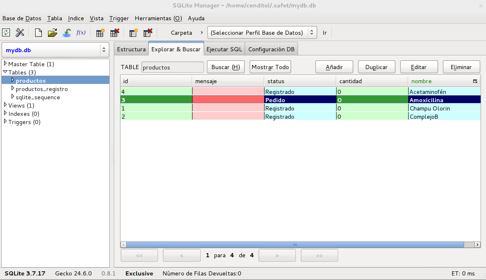
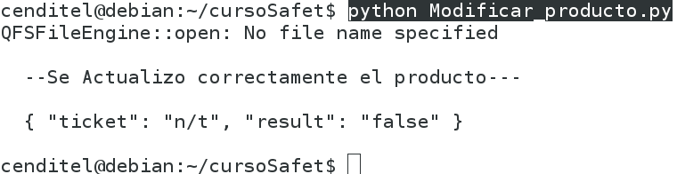
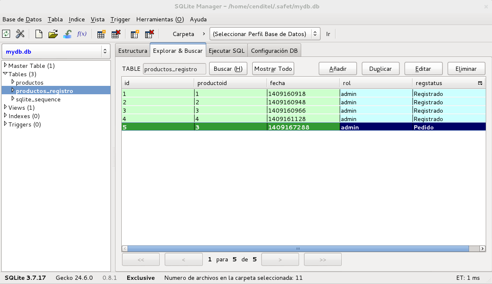

Operaciones CRUD+(flujo) utilizando PySafet¶
Las operaciones CRUD, son acciones generales que representan un modelo basíco para la creación de sistema de información. Puede ser una descripción más detallada en el siguiente enlace SOBRE CRUD.
El simbolo “+” indica las adición de operaciones asociada a flujo de trabajo.
A continuación comenzaremos a ver los pasos de las operaciones CRUB con un archivo que se llama deftrac.xml la cual va a estar en el directorio **<HOME>.safet/input/*
1° PRIMER PASO¶
Escribimos el encabezado (información de Autor).¶
<?xml version="1.0" encoding="UTF-8" ?> <!-- Documento : deftrac.xml Creado : Fulano de tal Autor : Fulano de tal Descripcion: Archivo de Entrada para SAFET - Inflow -->
- Escribimos la ruta al validador XML(formato DTD)
<!DOCTYPE operations SYSTEM "file:///home/cenditel/.safet/dtd/yawlinput.dtd">
- Ahora podemos empezar a escribir las operaciones siguientes:
- C(Insertar)
- R(Listar*)
- U(Actualizar)
- D(Borrar o eliminar)
- +(Flujo de trabajo)
<operations suffix=":" commandname="operacion"> <operation name="Productos" desc="Agregar,Modificar,Eliminar,Listar" icon="firmadoc.png"> </operation>2.- Operation Insertar “Productos” C(Insertar)
Las operaciones en PySafet consiste en una lista de comandos que se ejecutan secuencialmente.
Los comandos se componen de campos “Fields” que corresponden a los diferentes tipos de datos básicos y complejos. Por ejemplo analicemos el código XML del archivo deftrac.xml (operación agregar pruducto). Se define los siguiente:
1.- El tipo de comando es “agregar”.(type), los tipos posibles son “agregar”,”actualizar” y “eliminar”.
2.- La tabla de la base de datos donde se realizará el comando “command” es “productos”.
3.- Luego se especificar la lista de campos “fields”. Para este campo se especificaran dos campos, el nombre del producto “Nombre”, y el estado del producto que tomará el valor literal “literal”, “Registrado”.
4.- El segundo comando de la operación “Agregar_producto” también es del tipo “Agregar” y ojo los campos que son necesarios para registrar el eventos “Agregar_producto” en la tabla “productos_registro”.
5.- La palabra de PySafet “_USERNAME” se utiliza para obtener el usuario actual
A continuación se mostrara el archivo deftrac.xml:
<operation name="agregar_producto" desc="" icon="plus.png"> <command id ="1" type="agregar" table="productos" > <fields> <field type="string" icon="resumen.png" mandatory="yes" validation="" title="Nombre" desc=""> nombre </field> <field type="string" literal="Registrado" mandatory="yes" > status </field> </fields> </command> <command id ="1" type="agregar" table="productos_registro" > <fields> <field type="datetime" mandatory="yes" function="seq from sqlite_sequence where name='productos'" input="no"> productoid </field> <field type="datetime" mandatory="yes" function="datetime('now')" format="time_t" input="no"> fecha </field> <field type="string" literal="_USERNAME" mandatory="yes" > rol </field> <field type="string" literal="Registrado" mandatory="yes" > regstatus </field> </fields> </command> </operation>
Ejecutamos el Script para Insertar un producto
Seguidamente vamos a utilizar esta operación “agregar_producto” en un Script de python como se muestra a continuación:
- Operación: agregar_producto
- Nombre: El nombre del Producto agregar
# -*- coding: utf-8 -*- # D(Borrar o eliminar) # myconsult = u"operacion:borrar_producto id:5" # U(Actualizar) #myconsult = u"operacion:modificar_producto id:3 Nombre:Amoxicilina" # +(Flujo de trabajo) # myconsult = u"operacion:Actualizar_producto id:3 Estado_producto:Pedido" # Importación de la librería Safet y os import Safet import os # Aqui obtengo mi home,media y url myhome = os.getenv("HOME") mymedia = myhome + "/tmp" myurl = "http://localhost" # Constructor principal myinflow = Safet.MainWindow(myhome) myinflow.setMediaPath(mymedia) myinflow.setHostURL(myurl) # Si no es un usuario registrado el metodo "login" retorna False result = myinflow.login("admin","admin") # C(Insertar) # Agregamos el poducto a ingresar por ejemplo "Champu Olorin", # "ComplejoB","Aspirina","Acetaminofén","Ibuprofeno". myconsult = u"operacion:agregar_producto Nombre: ComplejoB" if result: result = myinflow.toInputForm(myconsult) else: print "\n ---Usuario autenticado---\n" exit() if result: print "\n --Se Actualizo correctamente el producto---\n" else: print "\n No se Actualizo el producto....!!!\n" if not result: print "\nConsulta failed error: %s\n" % (myinflow.currentError()) exit() print u" %s\n" % (myinflow.currentJSON())
- Crearemos un archivo ”.py” con cualquier nombre y copiamos el Script y lo ejecutamos de la siguiente manera:
Observen la siguiente imagen:

Figura 25: Insertar producto. Observen la base de datos en la siguiente imagen:

Figura 26: Tabla productos

Figura 27: Tabla productos_registro. 3.- Operation Eliminar “Productos” D(Borrar o eliminar)
<operation name="borrar_producto" desc="Elimina un ticket por id" icon="clear.png"> <command id ="1" type="eliminar" table="productos"> <fields> <field type="combolisttable" options="id:productos::id || ' - ' || nombre" mandatory="yes" primarykey="yes" title="id" > id </field> </fields> </command> <command id ="1" type="eliminar" table="productos_registro"> <fields> <field type="string" mandatory="yes" title="id" > productoid </field> </fields> </command> </operation>
Ejecutamos el Script para elimiar el producto
Seguidamente vamos a utilizar esta operación “borrar_producto” en un Script de python como se muestra a continuación:
- Operación: borrar_producto
- id: Aqui colocaremos el valor de id del producto por ejemplo borraremos el producto Ibuprofeno y su id es 5. Observe la Figura 26: Tabla productos
# -*- coding: utf-8 -*- # C(Insertar) # Agregamos el poducto a ingresar por ejemplo "Champu Olorin", # "ComplejoB","Aspirina","Acetaminofén","Ibuprofeno". #myconsult = u"operacion:agregar_producto Nombre: ComplejoB" # U(Actualizar) #myconsult = u"operacion:modificar_producto id:3 Nombre:Amoxicilina" # +(Flujo de trabajo) # myconsult = u"operacion:Actualizar_producto id:3 Estado_producto:Pedido" # Importación de la librería Safet y os import Safet import os # Aqui obtengo mi home,media y url myhome = os.getenv("HOME") mymedia = myhome + "/tmp" myurl = "http://localhost" # Constructor principal myinflow = Safet.MainWindow(myhome) myinflow.setMediaPath(mymedia) myinflow.setHostURL(myurl) # Si no es un usuario registrado el metodo "login" retorna False result = myinflow.login("admin","admin") # D(Borrar o eliminar) # Eliminamos el porducto numero 5 myconsult = u"operacion:borrar_producto id:5" if result: result = myinflow.toInputForm(myconsult) else: print "\n ---Usuario autenticado---\n" exit() if result: print "\n --Se Actualizo correctamente el producto---\n" else: print "\n No se Actualizo el producto....!!!\n" if not result: print "\nConsulta failed error: %s\n" % (myinflow.currentError()) exit() print u" %s\n" % (myinflow.currentJSON())$ python Eliminar_producto.pyObserven la siguiente imagen:

Figura 27: Script Eliminar producto.
Observen en la db en la siguiente imagen: Observe la Figura 26: Tabla productos

Figura 26: Tabla productos
Observen en la db en la siguiente imagen: Observe la Figura 27: Tabla productos_registro

Figura 27: Tabla productos_registro
4.- Operation Actualizar “Nombre del Producto” U(Actualizar)
<operation name="modificar_producto" desc="" icon="plus.png"> <command id ="1" type="actualizar" table="productos" > <fields> <field type="combolisttable" options="id:productos::id || ' - ' || nombre" mandatory="yes" primarykey="yes" title="id" order="desc"> id </field> <field type="string" icon="resumen.png" mandatory="yes" validation="" title="Nombre" desc=""> nombre </field> </fields> </command> </operation>
Ejecutamos el Script para Actualizar el nombre producto
Seguidamente vamos a utilizar esta operación “Actualizar_producto” en un Script de python como se muestra a continuación:
- Operación: modificar_producto
- id: Aqui colocaremos el valor de id del producto por ejemplo vamos a actualizar el producto Aspirina y su id es 3. Observe la Figura 26: Tabla productos
- Nombre: Aqui se coloca el nombre al que le vamos a modificar por ejemplo Amoxacilina por Aspirina.
# -*- coding: utf-8 -*- # C(Insertar) # Agregamos el poducto a ingresar por ejemplo "Champu Olorin", # "ComplejoB","Aspirina","Acetaminofén","Ibuprofeno". #myconsult = u"operacion:agregar_producto Nombre: ComplejoB" # D(Borrar o eliminar) # Eliminamos el porducto numero 5 #myconsult = u"operacion:borrar_producto id:5" # +(Flujo de trabajo) # myconsult = u"operacion:Actualizar_producto id:3 Estado_producto:Pedido" # Importación de la librería Safet y os import Safet import os # Aqui obtengo mi home,media y url myhome = os.getenv("HOME") mymedia = myhome + "/tmp" myurl = "http://localhost" # Constructor principal myinflow = Safet.MainWindow(myhome) myinflow.setMediaPath(mymedia) myinflow.setHostURL(myurl) # Si no es un usuario registrado el metodo "login" retorna False result = myinflow.login("admin","admin") # U(Actualizar) # Se actualizara el nombre del producto número 3 myconsult = u"operacion:modificar_producto id:3 Nombre:Amoxicilina" if result: result = myinflow.toInputForm(myconsult) else: print "\n ---Usuario autenticado---\n" exit() if result: print "\n --Se Actualizo correctamente el producto---\n" else: print "\n No se Actualizo el producto....!!!\n" if not result: print "\nConsulta failed error: %s\n" % (myinflow.currentError()) exit() print u" %s\n" % (myinflow.currentJSON())$ python Modificar_producto.pyObserven la siguiente imagen:

Figura 29: Script Actualizar producto.
Observen en la db en la siguiente imagen: Observe la Figura 26: Tabla productos
Figura 26: Tabla productos
5.- Operation Actualizar “Productos” +(Flujo de trabajo)
<operation name="Actualizar_producto" desc="Pasa de estado un determinado ticket" icon="padlock.png"> <command id ="1" type="actualizar" table="productos"> <fields> <field type="combolisttable" options="id:productos::'(' || id || ')' || nombre" mandatory="yes" primarykey="yes" order="desc"> id </field> <field type="comboflow" mandatory="yes" options="next" path="/home/cenditel/.safet/flowfiles/productos.xml" title="Status_producto"> status </field> </fields> </command> <command id ="1" type="agregar" table="productos_registro" > <fields> <field type="datetime" mandatory="yes" function="seq from sqlite_sequence where name='productos'" input="no"> productoid </field> <field type="datetime" mandatory="yes" function="datetime('now')" format="time_t" input="no"> fecha </field> <field type="string" literal="_USERNAME" mandatory="yes" > rol </field> <field type="string" title="Status" mandatory="yes" > regstatus </field> </fields> </command> </operation>
Ejecutamos el Script para Actualizar el Status del producto
Seguidamente vamos a utilizar esta operación “Actualizar_producto” en un Script de python como se muestra a continuación:
- Operación: Actualizar_producto
- id: Aqui colocaremos el valor de id del producto por ejemplo vamos a actualizar el producto Aspirina y su id es 3. Observe la Figura 26: Tabla productos
- Estado_producto: Aqui se coloca el estado del producto es decir si es por llegar,Agotarse,Pedido,En Espera. En este caso esta Registrado vamos a modificarlo a pedido.
# -*- coding: utf-8 -*- # C(Insertar) # Agregamos el poducto a ingresar por ejemplo "Champu Olorin", # "ComplejoB","Aspirina","Acetaminofén","Ibuprofeno". #myconsult = u"operacion:agregar_producto Nombre: ComplejoB" # D(Borrar o eliminar) # Eliminamos el porducto numero 5 #myconsult = u"operacion:borrar_producto id:5" # U(Actualizar) # Se actualizara el nombre del producto número 3 #myconsult = u"operacion:modificar_producto id:3 Nombre:Amoxicilina" # Importación de la librería Safet y os import Safet import os # Aqui obtengo mi home,media y url myhome = os.getenv("HOME") mymedia = myhome + "/tmp" myurl = "http://localhost" # Constructor principal myinflow = Safet.MainWindow(myhome) myinflow.setMediaPath(mymedia) myinflow.setHostURL(myurl) # Si no es un usuario registrado el metodo "login" retorna False result = myinflow.login("admin","admin") # +(Flujo de trabajo) # Se actualizara su estado myconsult = u"operacion:Actualizar_producto id:3 Estado_producto:Pedido" if result: result = myinflow.toInputForm(myconsult) else: print "\n ---Usuario autenticado---\n" exit() if result: print "\n --Se Actualizo correctamente el producto---\n" else: print "\n No se Actualizo el producto....!!!\n" if not result: print "\nConsulta failed error: %s\n" % (myinflow.currentError()) exit() print u" %s\n" % (myinflow.currentJSON())$ python Actualizar_Status_producto.pyObserven la siguiente imagen:

Figura 29: Script Actualizar producto.
Observen en la db en la siguiente imagen: Observe la Figura 26: Tabla producto

Figura 26: Tabla producto
Observen en la db en la siguiente imagen: Observe la Figura 27: Tabla producto_registro
Figura 27: Tabla producto_registro
- Nota:
Archivo deftrac:
Archivo Script:

{kind=link}
{kind=link}
{kind=link}